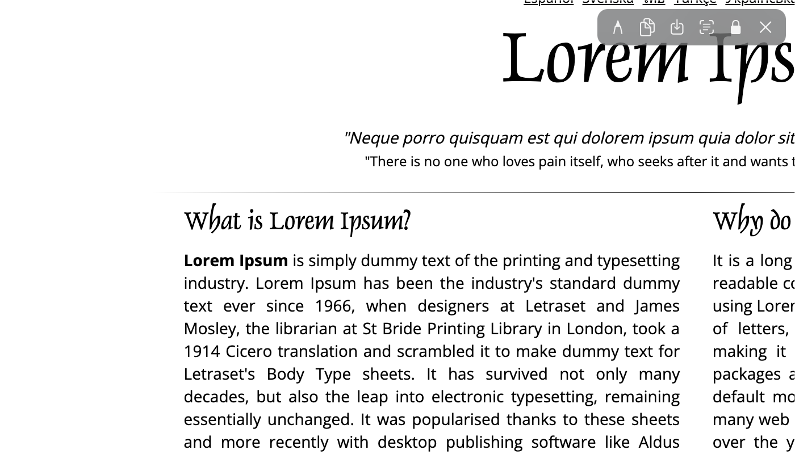
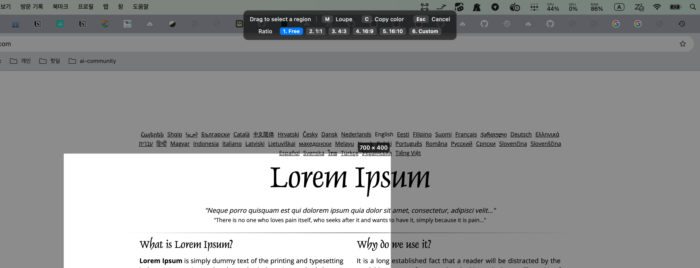
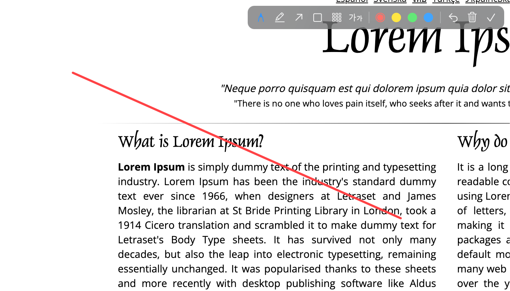

HoldImg
Screenshots that float above everything — capture, pin, and re-copy anytime
한국어 · English
Contents
01Getting Started
Three steps from first launch to your first capture.
Install
Download HoldImg.app.zip from
GitHub Releases,
unzip it, and move the app to /Applications.
xattr -d com.apple.quarantine /Applications/HoldImg.app in Terminal.Screen Recording Permission (one-time)
macOS requires your permission for any screen capture. The first time you press Ctrl⌥C, a permission prompt appears.
- Click Open Settings in the prompt (or go to System Settings → Privacy & Security → Screen & System Audio Recording)
- Turn on HoldImg.app in the list (authentication required). If it's not listed, add
/Applications/HoldImg.appwith the + button - Click Quit & Reopen to apply
02Core Concepts
HoldImg shows each capture as an independent window floating above everything. Think of each panel as a movable sticky note, not a static copy.
- Pin for reference — keep a fragment of the screen beside you while you write or code
- One click to copy — click a panel and its image goes to the clipboard, ready to paste anywhere
- Eyes only — click-through mode lets the mouse pass straight through to the app below
- History — every capture is saved as a PNG and can be reopened from "Recent Captures"

03Global Shortcuts
They work from any app. Every shortcut can be remapped in Settings.
| Shortcut | Action | Details |
|---|---|---|
| Ctrl⌥C | Region capture | Freezes the screen; drag to select a region |
| Ctrl⌥W | Window capture | Hover to highlight a window; click to capture just that window |
| Ctrl⌥R | Recapture last region | Reshoots the previous region instantly, no overlay |
| Ctrl⌥V | Paste from clipboard | Floats whatever image is on the clipboard |
| Ctrl⌥H | Hide/show all panels | Tucks every panel away; press again to restore them in place |
| Ctrl⌥Z | Restore closed panel | Reopens the last closed panel at its original position — up to 10 deep |
04Region Capture in Detail
Pressing Ctrl⌥C freezes every display at that moment and enters selection mode. A selection can span multiple monitors, and on Retina displays it's saved at native pixel resolution (2x) so it stays sharp when zoomed.

The hint bar at the top of the screen shows available actions:
M Loupe · C Copy color · Esc Cancel,
plus ratio chips 1. Free–6. Custom.
Aspect-ratio modes
Press a number key while selecting to change the capture ratio. The current mode is highlighted in the hint bar. Pressing a key mid-drag reshapes the selection instantly while keeping the start point, so you can tap through ratios to compare.
| Key | Ratio | Behavior |
|---|---|---|
| 1 | Free | Default — drag any shape |
| 2 | 1:1 | Automatically fits the ratio along your drag direction |
| 3 | 4:3 | |
| 4 | 16:9 | |
| 5 | 16:10 |
Fixed pixel size
Press 6 to open a size field. Enter a pixel size like
1920x1080, hit Return, and a box of exactly that
size follows your cursor. Click to capture instantly.
- Separators are flexible:
640x360,640 360, and640×360all work - Values are logical points — on a Retina (2x) display,
640x360saves as a 1280×720 PNG
Loupe & color picker
Press M to show a loupe magnifying the cursor area plus the
cursor pixel's HEX value (off by default; press again to hide).
C copies the cursor pixel's HEX value (e.g. #3B6FE0)
to the clipboard.
Window capture
Ctrl⌥W freezes the screen and highlights whichever window you hover over. Click to capture just that window at native resolution.
Cancel
Press Esc at any point to cancel the selection.
05Floating Panel Controls
Each capture appears as a thin, borderless window. Hover over it and use the controls below.
| Action | How |
|---|---|
| Move | Drag anywhere — auto-snaps to screen edges and other panels' edges/centers. Arrow keys nudge 1pt, ⇧+arrows nudge 10pt |
| Rotate/flip | R rotate 90° CW · ⇧R CCW · F flip horizontal — applied to the image data itself, so copies and saves reflect it |
| Drag out as file | Right-click drag — drop into Finder, Slack, Mail, or any app as an image file |
| Resize | Scroll = zoom at cursor · drag corners/edges = resize (aspect ratio locked by default — unlock with L or the toolbar 🔒 for freeform).
A dimension badge (e.g. 800 × 600) appears at the bottom while resizing — it's not part of the image |
| Collapse/restore | Double-click — folds into a thumbnail; double-click again to restore |
| Copy image | Click or ⌘C — paste straight into other apps |
| Save to file | ⌘S — PNG or JPEG |
| Annotate | P — annotation mode (pen · highlighter · arrow · rectangle · mosaic · text) |
| Extract text (OCR) | Toolbar OCR button or right-click menu — recognized text goes to the clipboard |
| Always on top | T — pin above all windows |
| Click-through | G — the panel stays visible but the mouse passes through |
| Opacity | ⌥+scroll — make the panel translucent |
| Close | ⌘W or Esc |
Hover toolbar
Hovering over a panel reveals a small toolbar at the top right: pen · copy · save · OCR · aspect lock · close — common actions without shortcuts. Aspect lock (🔒) is on by default; unlock it for freeform corner drags. The OCR button recognizes text in the image and copies it to the clipboard (beeps if no text is found).
Annotation tools
Press the toolbar's pen button or P to enter annotation mode. Pick a tool from the front of the toolbar, then drag on the image.

- Pen — freehand drawing
- Highlighter — a wide translucent band along your drag path
- Arrow — an arrow pointing along your drag direction
- Rectangle — an area-highlight box
- Mosaic — pixelates the dragged region to hide sensitive info
- Text — an input field appears where you click; Return commits, Esc cancels
- Colors — red · yellow · green · blue
- Undo — ⌘Z or the undo button removes the last annotation
- Clear all — the trash button removes every annotation
- Done — ✓ bakes annotations into the image at native resolution, so copies and saves include them
- Cancel — Esc or P discards everything and exits annotation mode
Right-click menu
Right-clicking a panel opens a menu covering all of the above (copy · save · OCR · pen · always on top · click-through · opacity presets · rotate/flip · collapse · close). Dragging while holding the right button turns the panel into a file — drop it on any app or the desktop and it lands as an image.
06Menu Bar
Click the HoldImg icon (frame-and-brackets) in the menu bar for access to everything.

- Region/window capture, recapture, paste — same as the shortcuts; each item shows its current shortcut
- Open Image File… — floats JPG/PNG/GIF/TIFF/BMP/WebP files (use as a reference picture frame)
- Recent Captures — your capture history; click an entry to float it again. Clear all history from the bottom
- Hide/show all panels — tuck every panel away and restore it in place (Ctrl⌥H)
- Restore last closed panel — brings back an accidentally closed panel at its original position, up to 10 deep (Ctrl⌥Z)
- Close all / disable click-through — bulk management of floating panels
- Settings · Shortcuts
Capture history is stored as PNGs in
~/Library/Application Support/HoldImg/History.
07Settings
Menu bar → Settings… (⌘,)

Language
System Default · 한국어 · English — the whole UI switches instantly.
Copy to clipboard on capture
Puts the image on the clipboard the moment you capture. Enable it if you paste often.
New panels always on top
New floating panels start pinned above everything.
Default save location
Sets the folder that ⌘S save dialogs open to.
Recent captures kept
How many captures to keep in history, from 1 to 50.
Remap shortcuts
Assign any of the 6 global shortcuts to a combo you like.
Launch at login
HoldImg sits in your menu bar as soon as your Mac starts.
Show Dock icon
Keep it menu-bar-only or also show it in the Dock.
08Tips & FAQ
Great for…
- Reference work — pin a design mockup, error log, or data table beside your editor
- Comparing — recapture the same region with Ctrl⌥R to compare before/after side by side
- Sharing — capture → click the panel to copy → paste straight into chat, email, or docs
- Text extraction — capture a receipt, notice, or code snippet and hit the OCR button to get text
- Redact + explain — mosaic account numbers or personal info, then annotate with arrows and text before sharing
- Heads-up display — pin a metric region with click-through + always-on-top
- Color work — enable the loupe with M during capture and press C to grab a HEX value
FAQ
Q. Capture does nothing but show a permission prompt
Screen Recording permission is off. Follow the steps in Getting Started to allow HoldImg.
Q. The floating panel gets in the way of clicks
Press G on it or enable click-through from the right-click menu.
Q. I can't move a click-through panel
That's by design. Use menu bar → "Disable click-through on all" first.
Q. I want to reopen an old capture
Menu bar → Recent Captures → click it. The file is also kept on disk.
Q. Where are captures saved?
PNGs are stored automatically in ~/Library/Application Support/HoldImg/History.
Use ⌘S to save a copy anywhere.